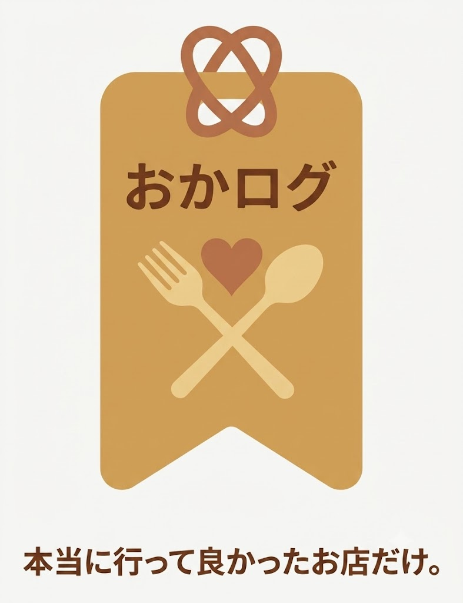

本当に行って良かったお店だけ。。。 関西中心にエリア拡大中。
通知（0件未読）
おすすめのお店やアピールポイントを添えてオーナーに送ると、通知が届きます。 承認されると、お店の登録・編集ができるようになります。
参考リンク 任意（食べログ・ホットペッパー・Instagramなど、複数登録できます）
利用シーン 任意
参考リンク 任意（食べログ・Instagramなど、複数登録できます）
共有先（任意・共有IDを知っている人だけと共有できます）
あなたの共有ID：- LINEなどで送る コピー （この番号を友達に伝えると、あなたのメールアドレスを教えずに共有してもらえます）
友達の共有IDで追加